Chapter 4 Data visualization
We will now create and discuss data visualizations based on ggplot2 and the grammar of graphics. This chapter draws from the ggplot2 Cheat Sheet, the ggplot2 website, the visualization chapter from Wickham and Grolemund’s R for Data Science, and the third edition (in progress) of Wickham’s ggplot2 textbook.
# Load packages
library(tidyverse)
library(janitor)
# Clear the workspace
rm(list = ls())
# Let's load the data we cleaned in the previous chapter
load("my_data.rda")In its simplest form, any ggplot2 graph is created with the following type of code:
ggplot(data = <Data>) +
<Geom_Function>(mapping = aes(<Mappings>)) +
<Scale_Function> +
<Theme_Function>We will now discuss the five graph components that are visible in that code:
<Data>: the underlying data.<Geom_Function>: geometrical objects (or geoms). A plot consists of one or more geoms, one in each layer of the plot. Note that we can add multiple layers (therefore multiple geoms) in the same plot.<Mappings>: an aesthetic mapping from variables in the data to visual properties (i.e., aesthetics) of a geom. There are one or more aesthetic mappings for each geom.<Scale_Function>: a scale that assigns a specific visual attribute (i.e., a value of the aesthetic) to each value of a variable in the data. Each aesthetic mapping has one scale.<Theme_Function>: general, non-data graphical elements of the plot (e.g., background color, text fonts, etc.).
4.1 Univariate distributions
4.1.1 Continuous variables: histograms and boxplots
Histograms.
Here we only have one aesthetic mapping in aes(): values of age are mapped to values of x (the horizontal axis).
## `stat_bin()` using `bins =
## 30`. Pick better value with
## `binwidth`.Note that there is also a statistical transformation being applied to the data before plotting (which one?). We can modify that transformation of the data: for example, pick a different width for the histogram bins.
Modify visual properties of the plot: bin color and fill.
Modify the scale of the x aesthetic mapping.
ggplot(data = data) +
geom_histogram(aes(x = age), binwidth = 1,
color = "white", fill = "black") +
scale_x_continuous(breaks = seq(20, 80, by = 10))Modify the general theme of the plot.
ggplot(data = data) +
geom_histogram(aes(x = age), binwidth = 1,
color = "white", fill = "black") +
scale_x_continuous(breaks = seq(20, 80, by = 10)) +
theme_bw()Let’s add another geom in a new layer: a density plot. Note that now the bin height and y axis are not count values but density values: this is specified by setting the y aesthetic in aes().
ggplot(data = data) +
geom_histogram(aes(x = age, y = after_stat(density)), binwidth = 1,
color = "white", fill = "black") +
geom_density(aes(x = age), linewidth = 1, color = "red") +
scale_x_continuous(breaks = seq(20, 80, by = 10)) +
theme_bw()Boxplots.
In a new layer, we can use a new geom to add the actual data points on top of the boxplot (with some vertical jittering).
4.1.2 Categorical variables: simple barplots
Simple barplots.
Two aesthetics (x and fill) for the same variable (edu).
Note the importance of the order of levels in edu factor.
## [1] "Medie o meno" "Superiori" "Laurea" "Post-laurea" "Altro"## [1] "Altro" "Post-laurea" "Laurea" "Superiori" "Medie o meno"# Make the change in the data
data.rev <- data |>
mutate(edu = fct_rev(edu))
# Not plot with the new level order
ggplot(data = data.rev) +
geom_bar(aes(x = edu, fill = edu))Back to the original level order, modify the fill color scale (and theme).
4.2 Associations between two variables
4.2.1 Two continuous variables: scatterplots
Let’s first consider the association between age and work.exp.y (years of experience in current company). We expect a positive association
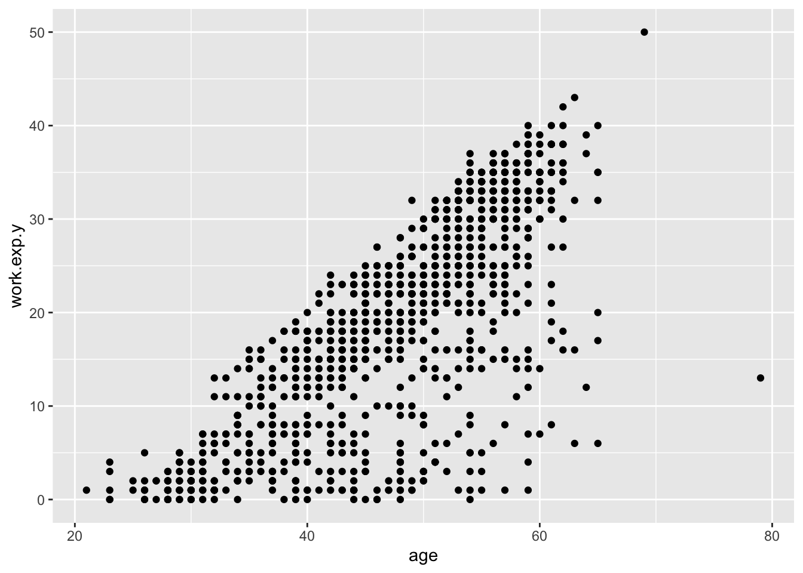
Note that there is a lot of overplotting: many of those dots represent multiple data points (what makes us suspicious about this is that points are too neatly arranged as in a grid). Indeed, for each unique combination of age and work.exp.y there are multiple data points (i.e. multiple respondents):
## # A tibble: 530 × 3
## # Groups: age, work.exp.y
## # [530]
## age work.exp.y n
## <dbl> <dbl> <int>
## 1 51 30 7
## 2 53 32 7
## 3 54 32 7
## 4 56 35 7
## 5 30 2 6
## 6 42 15 6
## 7 49 22 6
## 8 56 30 6
## 9 57 33 6
## 10 57 35 6
## # ℹ 520 more rowsTo see this more clearly in the plot, we can change point shape to hollow point and add a little horizontal jittering.
set.seed(106)
ggplot(data = data) +
geom_point(aes(x = age, y = work.exp.y), shape = 21, position = position_jitter(w = 0.3))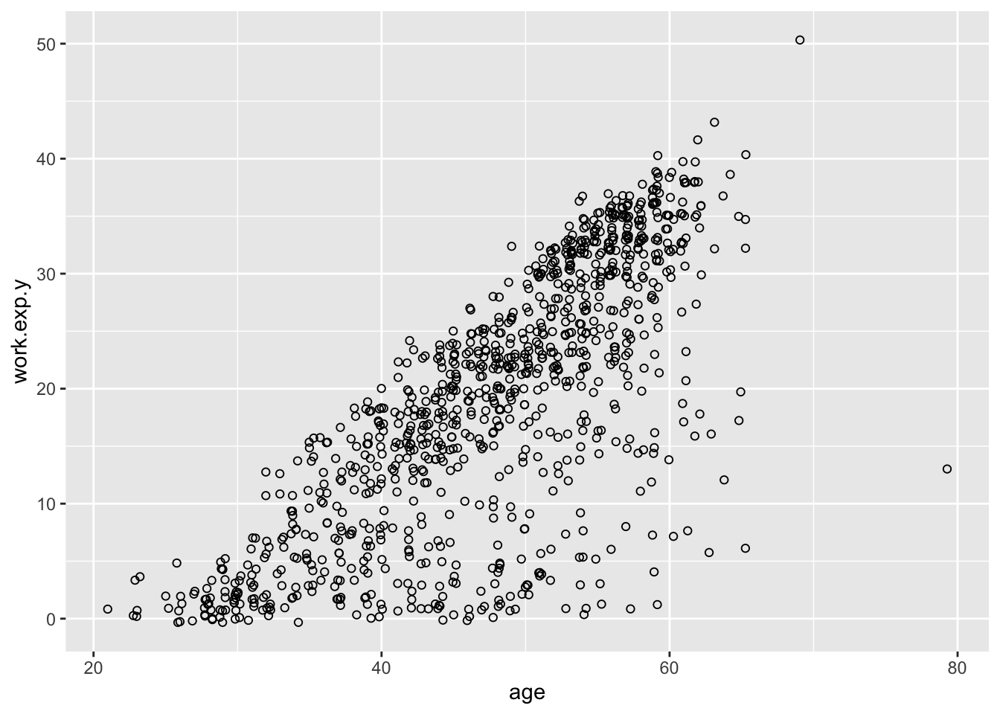
The positive association between the x and y variables can be seen more clearly if we add, in a new layer, the smoothing line that best approximates the relationship between x and y. Note that now we have two geoms with the same aes() argument, so we move aes() into the ggplot() call to avoid having to repeat it in both geom calls.
set.seed(106)
ggplot(data = data, aes(x = age, y = work.exp.y)) +
geom_point(shape = 21, position = position_jitter(w = 0.3)) +
geom_smooth()## `geom_smooth()` using method
## = 'gam' and formula = 'y ~
## s(x, bs = "cs")'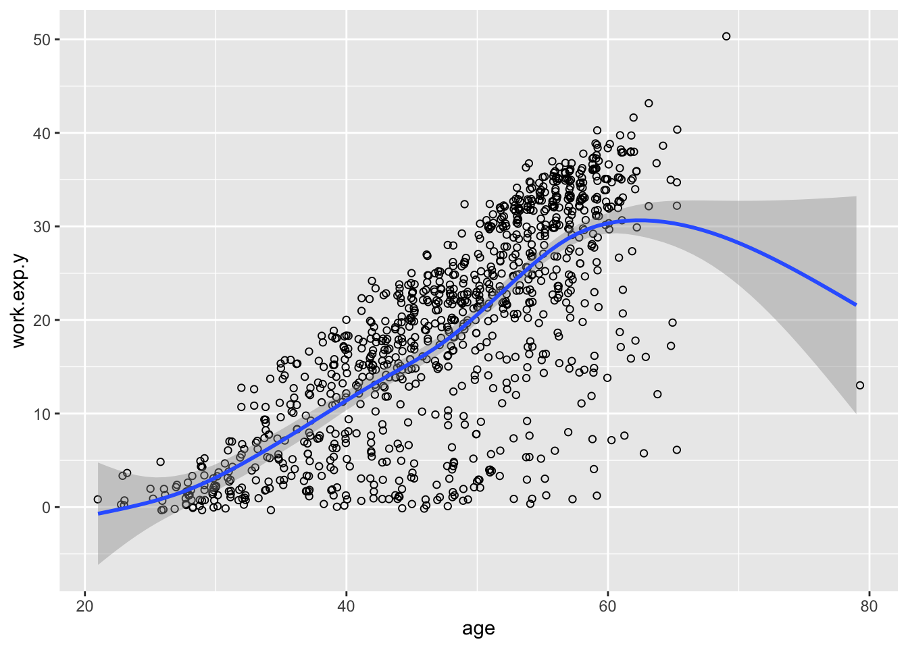
Let’s do the same plot for another pair of continuous variables: age and driver.sum. The latter is the sum of all answers (converted to numeric) to the 24 “driver” questions: an overall score of a respondent’s tendency to agree that the “drivers” listed in the survey are important. We’ll change colors and theme just to show some graphical variation.
set.seed(106)
ggplot(data = data, aes(x = age, y = driver.sum)) +
geom_point(shape = 21, color = "white", position = position_jitter(w = 0.3)) +
geom_smooth(color = "red") +
theme_dark()## `geom_smooth()` using method
## = 'gam' and formula = 'y ~
## s(x, bs = "cs")'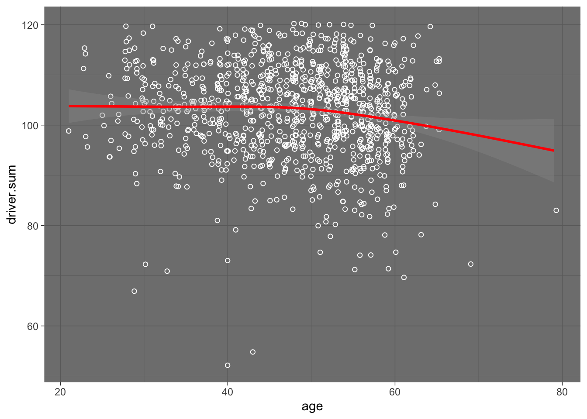
4.2.2 Two categorical variables: complex barplots
Here we want to visualize the relationship between two categorical variables: generation (gen) and education level (edu). You can think of the data we want to view as a table of counts (absolute frequencies) of edu categories in each gen category:
## edu baby boomers gen x millennials gen z
## Medie o meno 3 18 2 0
## Superiori 62 289 62 3
## Laurea 34 166 149 10
## Post-laurea 4 66 71 3
## Altro 7 37 13 1We can also think of the data as relative frequencies of edu categories in each gen category:
## edu baby boomers gen x millennials gen z
## Medie o meno 0.03 0.03 0.01 0.00
## Superiori 0.56 0.50 0.21 0.18
## Laurea 0.31 0.29 0.50 0.59
## Post-laurea 0.04 0.11 0.24 0.18
## Altro 0.06 0.06 0.04 0.06Alternatively, we can look at the relative frequencies of gen categories in each edu category:
## edu baby boomers gen x millennials gen z
## Medie o meno 0.13 0.78 0.09 0.00
## Superiori 0.15 0.69 0.15 0.01
## Laurea 0.09 0.46 0.42 0.03
## Post-laurea 0.03 0.46 0.49 0.02
## Altro 0.12 0.64 0.22 0.02Grouped barplots.
We start by plotting the counts of educational categories in each generation. Here, each bar is an educational category within a generation category. Bars are grouped by generation: each generation is a group with one position on the x axis, and all bars for one generation are plotted side by side around that generation’s x position. Note that we transform gen with fct_rev() so as to have younger generations first, that is, younger on the left and older on the right (the transformation is done within the plot, it doesn’t affect the data object).
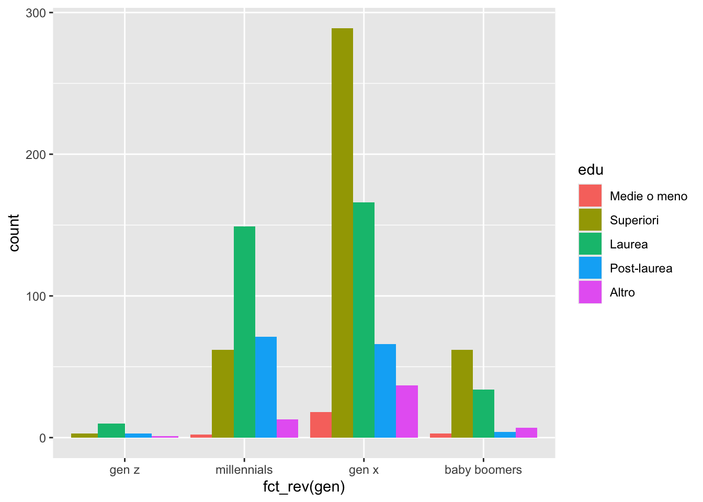
The position = "dodge" argument is what tells R to put the different edu bars in the same gen category side by side. We can invert gen and edu, by setting edu as the group and x position, and gen as the categories to be plotted side by side in the same edu group:
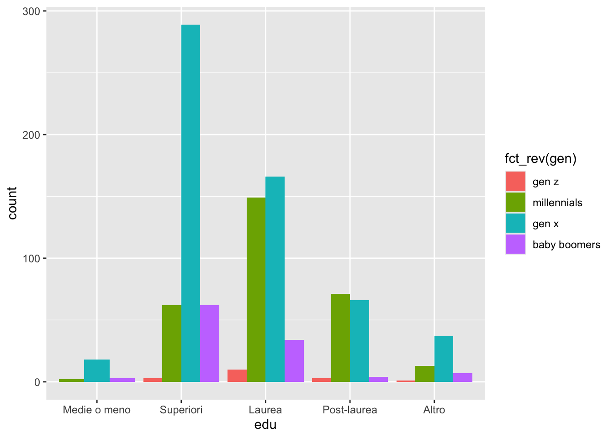
If we omit the position argument, the bars will be plotted one on top of the other: a stacked barplot.
Stacked barplots.
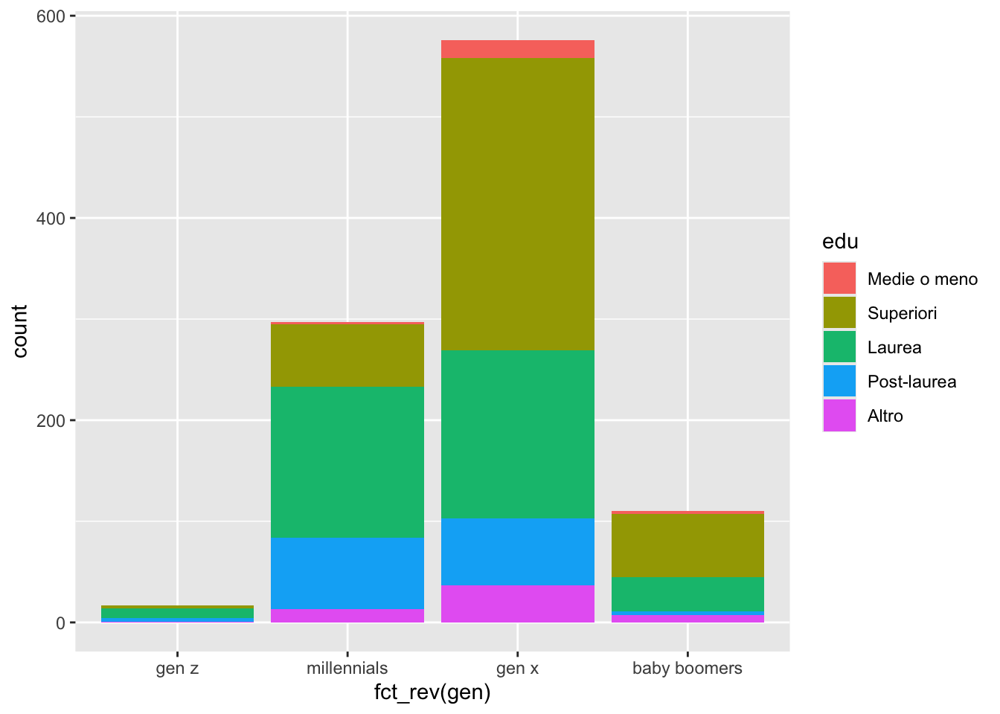
Note that these are counts: we are not seeing the relative frequencies of edu categories within each generation, and generations with more respondents (e.g., Gen X) correspond to taller bars (counts are larger).
To get relative frequencies (i.e. proportions or percentages) in each generation, standardizing all bar heights to the same (1 or 100), we set the position argument to "fill". Now we see a clear pattern of association between generation and education level.

4.2.3 One continuous and one categorical variable: boxplots and faceted histograms
Boxplots.
We have already seen boxplots. Since a boxplot is a very parsimonious and concise way of displaying a univariate distribution, we can easily draw multiple boxplots – one for each group – to compare the univariate distribution of the same variable (e.g., driver.sum) in different groups (e.g., generations) side by side. All we need is set the continous variable as the x aesthetic and the categorical variable as the y (or viceversa for vertical boxplots):
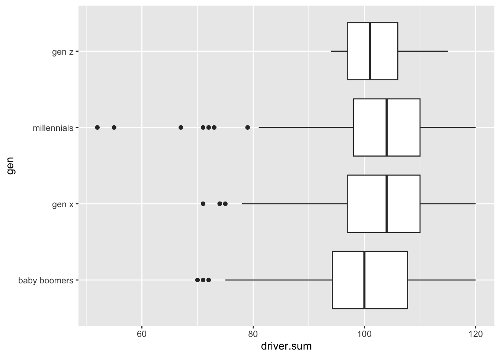
We do see some pattern here (what is that?).
Faceted histograms.
Whenever we have a categorical variable, we can use facets to create the same plot for each group (i.e., category) of that categorical variable. In other words, the same plot will have multiple facets, each facet corresponding to one category. In this way, we can create, for example, the same histogram of driver.sum for each gen category separately. Let’s start by creating the one driver.sum histogram we want:
ggplot(data = data) +
geom_histogram(aes(x = driver.sum, y = after_stat(density)), binwidth = 5, color = "white") +
theme_bw()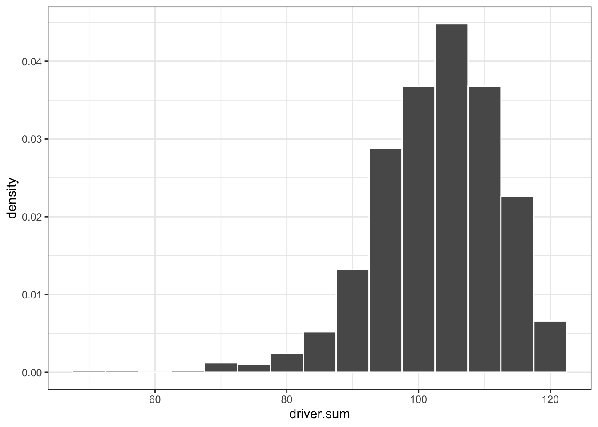
By adding a facet function, we can now create the same plot for each facet (e.g., gen category):
ggplot(data = data) +
geom_histogram(aes(x = driver.sum, y = after_stat(density)), binwidth = 5, color = "white") +
facet_wrap(~ gen) +
theme_bw()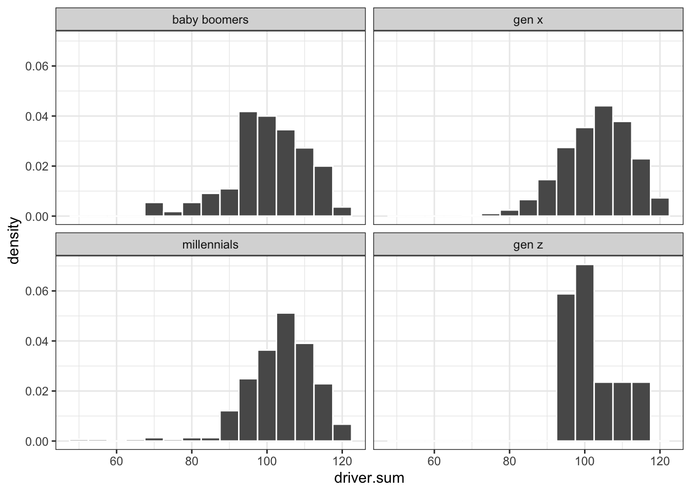
Faceting functions in ggplot2 are very flexible and allow us to explore any kind of grouping by one or more categorical variable. For example, we may want to look at intersections of generations and genders, that is, generation-gender groups. With facet_grid(), we can have a neat matrix with generations as rows and genders as columns, each cell being a generation-gender combination:
# For simplicity, let's first subset the data to just Male and Female genders.
data.mf <- data |>
filter(gender %in% c("Donna", "Uomo"))
# Now plot
ggplot(data = data.mf) +
geom_histogram(aes(x = driver.sum, y = after_stat(density)), binwidth = 5, color = "white") +
facet_grid(gen ~ gender) +
theme_bw()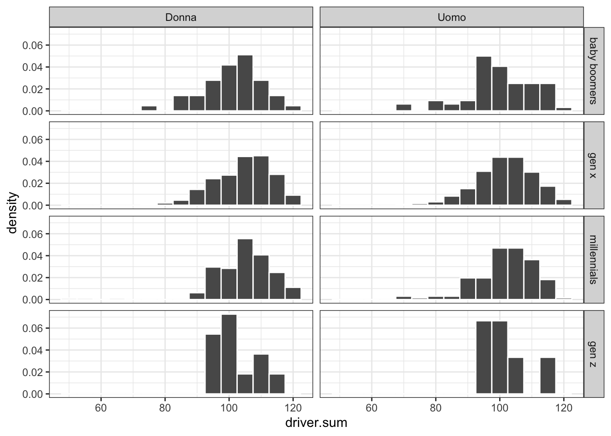